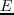
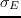

Next: Methods Up: Comparing three stochastic search Previous: Abstract
The number of amino acid positions that are allowed to mutate can vary, depending on the problem of interest, from 2 or 3 to several dozen, or even more (especially if a very simple and approximate energy fonction is used). Thus, the combinatorial complexity can be enormous, so that speed is important, as well as accuracy. In addition, it is usually important to identify not one but several high-scoring sequences, for at least three reasons. First, if the typical error in the energy function is , we should enumerate all the possible sequences/structures within 1 or 2 of the optimal one. Second, it may be of interest to characterize the diversity of a sequence family, by enumerating sets of sequences compatible with its backbone fold (the ``inverse folding problem'') [#!Ponder87!#,#!Koehl02!#,#!Larson02!#,#!Schmidt09!#,#!Schmidt10!#]. Third, we may want to compute properties that are averaged over structural and possibly sequence fluctuations at a given temperature, which requires that we explore solutions within the thermal range. An example is the calculation of ligand binding constants, following a method introduced recently [#!Druart16!#,#!Polydorides16!#]. Calculation of acid/base constants by constant-pH Monte Carlo (MC) is another example, which can be seen as a subproblem of CPD, with sidechain protonation state changes are treated as mutations [#!Aleksandrov10!#,#!Polydorides13!#,#!Kilambi12!#].
Thus, the complexity and cost of a CPD calculation will depend on several factors. While energy calculations usually represent the bulk of the cost, the power and efficiency of the exploration method are also very important. Several exploration methods exist that can identify exactly the global minimum energy sequence and conformation (GMEC). These include ``dead end elimination'' methods, or DEE [#!Looger01!#,#!Georgiev08!#], branch-and-bound methods [#!Gordon99!#,#!Hong09!#], and cost function network methods [#!Traore13!#,#!Allouche14!#]. While some of these methods can handle large problems, they usually cannot enumerate suboptimal solutions within a large interval above the GMEC (more than a few kcal/mol). Partly for this reason, stochastic methods remain popular, such MC [#!Zou03!#,#!Samish11!#]. MC has two advantages. First, in the limit of a long simulation and with an appropriate move set and move acceptance scheme, we expect this method to sample sequence/conformation from a Boltzmann distribution. Second, MC can be readily combined with enhanced sampling methods developed in the broader field of molecular simulations, such as Replica Exchange or umbrella sampling [#!FrenkelBK!#,#!ChipotBK!#].
Our goal here is to assess three stochastic exploration methods for a series of CPD problems of increasing complexity. The first method is a heuristic method that is not guaranteed to find the global minimum energy conformation, or GMEC, but has been effective in applications [#!Wernisch00!#,#!Schmidt09!#,#!Schmidt10!#].It perfoms steepest-descent minimizations starting from thousands of different random configurations,yielding a large number of low energy sequences. The second method is a MC exploration. To obtain Boltzmann sampling with MC, rather weak conditions are required. Specifically, if the sequence/conformation space is finite (as here), if any two states in this space can be connected by moves from the allowed move set (as here), if the move scheme is time-independent (as here), if we assume there are no periodic series of states that can trap the system, and if the move probability has a simple reversibility property (the Kolmogorov condition [30], verified here), then a very long trajectory is guaranteed to converge to a stationary state and obey the so-called detailed balance condition [28] (see below). This in turn makes it easy to design a move acceptance scheme that leads to Boltzmann statistics, such as the classic Metropolis scheme [#!Metropolis53!#,#!FrenkelBK!#]. The third method is an enhanced, multiwalker MC, which performs ``replica exchange'' [#!Sugita99!#,#!Kofke02!#,#!Earl05!#]. Several walkers, or replicas are propagated at different temperatures, and exchange conformations at regular intervals according to a MC test. We refer to it as Replica Exchange Monte Carlo (REMC). These methods are also compared to a fourth method that is exact, in the sense that it can provably identify the GMEC in favorable cases [#!Traore13!#,#!Allouche14!#]. It is based on `cost function networks'', or CFN, where the cost function is the energy, and the network refers to the set of interacting amino acids. The CFN method uses a depth-first branch-and-bound search through a tree of rotamer assignments, with fast integer arithmetic for the energy evaluations and sophisticated tree pruning operations. It can also enumerate all the sequence/conformation combinations within a given energy range  (not too large) above the GMEC. It is implemented in the Toulbar2 program, by Schiex and coworkers. Other exact methods exist, some of which appear to be even faster than CFN [#!Hong09!#]. Our goal, however, is not to ``rank'' the stochastic and exact methods, but rather to compare our three stochastic methods to each other, and this is facilitated if an exact enumeration of low energy states has also been done.
We use a CPD model that is rather simple but representative of a large class of applications. We use a fixes backbone structure, a discrete set of sidechain rotamers and we assume that the energy function is pairwise additive; that is, the energy has the form of a sum over residue pairs [#!Schmidt08b!#,#!Schmidt08!#,#!Simonson13b!#]. With these simplifications, all possible residue pair interactions can be computed ahead of time and stored in a lookup table [#!Dahiyat97!#]; exploration is then done in a second stage. Thus, the cost of energy calculations and sequence/structure exploration are well-separated. The method is implemented in the Proteus CPD package [#!Schmidt08!#,#!Simonson13b!#] (except for the CFN sequence exploration, done with Toulbar2). Our MC framework is presented in some detail below; the other methods are recalled more briefly.
We considered nine test proteins from three structural classes: SH3, SH2, and PDZ domains. The sequence identity between representatives of the same family is in the range 25–38%, with two exception (SH2 domains 1A81, 1M61 have 57% identity, PDZ domains 2BYG, 1R6J have 19% identity). For each protein, we chose different numbers and sets of residues to mutate and we applied the different exploration methods, using several possible parameterizations for each one. To characterize the different methods, we compared their speed, their ability to identify the GMEC, and their sampling of suboptimal sequences/conformations above the GMEC. The designed sequences were characterized by computing their similarity to natural sequences, their classification by the Superfamily fold recognition tool [#!Gough01!#,#!Wilson07!#], and their sequence entropies; they are shown to agree rather well with natural sequences of the corresponding families. Overall, the heuristic method is the most successful in identifying low energy solutions, while REMC is almost as successful but has the advantage of sampling from a Boltzmann distribution over a large energy range, yielding thermal averages.
mignon 2017-11-30